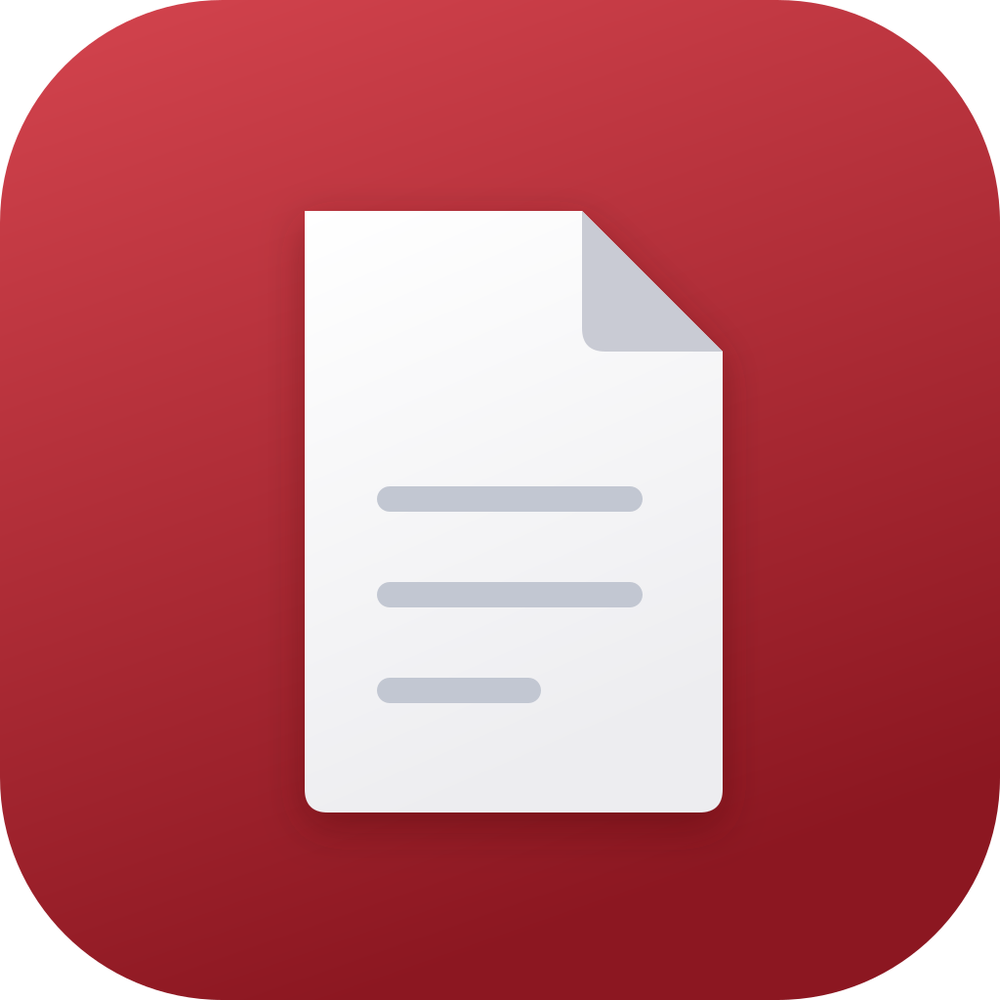

Opens instantly
Documents are parsed lazily, so opening cost barely moves with size. Four thousand pages and thirteen megabytes take roughly the same time as a one-page invoice — and that number is enforced by a test, not a claim.

PDF ViewerBuilt on PDFium — the same engine inside Chrome. A four-thousand-page document opens in about two and a half milliseconds. It remembers your page, and it asks for no permissions at all.
Free and open source · GPL-3.0 · No tracking, no accounts, no network calls
Documents are parsed lazily, so opening cost barely moves with size. Four thousand pages and thirteen megabytes take roughly the same time as a one-page invoice — and that number is enforced by a test, not a claim.
Close it, rename the file, move it to another folder, copy it to a different device. It still resumes exactly where you stopped, because documents are recognised by their contents rather than by where they happen to sit.
No storage permission. No account. No analytics, no crash reporting, no network access of any kind. It opens the file you handed it and that is the entire relationship.
Around 23 MB on Android, downloading only the build for your processor instead of three copies of the render engine you will never run.
Checking for the latest release…
Could not reach the GitHub API just now — it limits unauthenticated requests to 60 per hour per address.
You will see “Apple could not verify PDF Viewer is free of malware.” Read that carefully: it does not say malware was found. It says Apple could not verify. macOS shows this for every application that has not been notarised, and notarising requires a paid Apple Developer account this project does not have. Nothing was scanned and nothing was found.
On macOS 15 and newer, right-click → Open no longer works for this. Prefer the terminal?
xattr -dr com.apple.quarantine "/Applications/PDF Viewer.app"
The same instructions ship inside the disk image, next to the app.
Android asks you to allow installs from whichever app you downloaded with: Settings → Apps → Special access → Install unknown apps. That prompt appears for any APK not delivered by a store.
Take the arm64-v8a build unless you know otherwise — it covers essentially every phone from the last decade. Requires Android 7.0 or newer.
The app builds for iOS. It cannot be distributed. iOS verifies code signatures in the kernel, and only Apple can issue a signature it will accept — there is no equivalent to Android's “install unknown apps”. Every route onto an iPhone requires the Apple Developer Program at 99 USD a year, so no downloadable iOS build exists outside the App Store or TestFlight.
There is a second, separate obstacle: this project is GPL-3.0, and the GPL conflicts with App Store terms — Apple applies DRM that prevents the redistribution the licence requires. It is the same conflict that got VLC pulled from the App Store in 2011.
Both are scaffolded but not yet published. Flutter does not cross-compile desktop targets, so they cannot be produced on the Mac this is developed on — they need their own build machines. You can build them from source today; see the README.